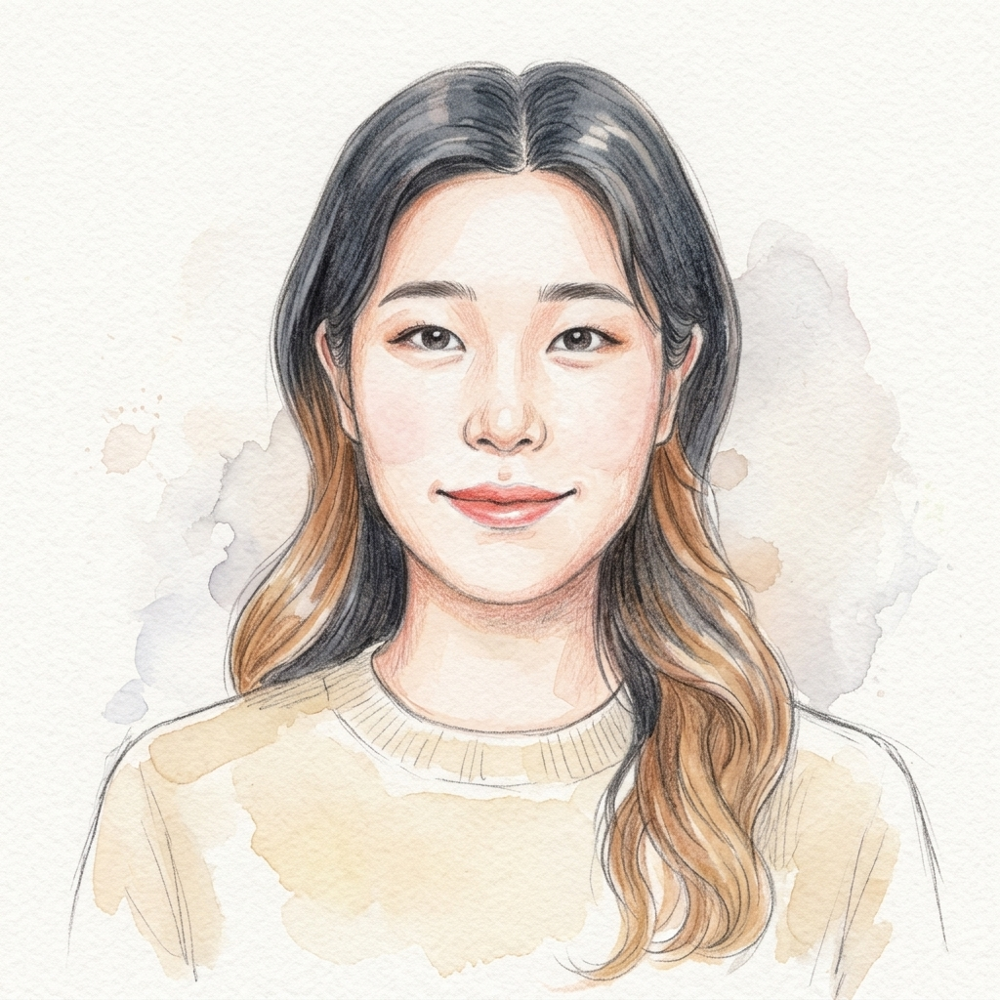

韓
國
學
Korean Studies Librarian
한국학 주제전문사서 노윤진

정사서 2급 | 사회학 · 문헌정보학 전공
이메일 보내기
이메일 복사
經
경력 사항
재외동포협력센터 / 재외동포자료실
사서
2026.04.20 ~ 2026.08.31
재외동포 관련 도서 수집, 조직, 목록(서지 정보 구축)
이용자 자료 검색 및 열람 지원
學
학력 및 자격
국가 공인 자격
정사서자격증 2급
2025.08 취득
학사 학위
문헌정보학 · 사회학 전공
복수 전공 학사
術
전문 역량 및 시스템
서지 및 분류 체계
KORMARC
KDC (한국십진분류법)
DDC (듀이십진분류법)
도서관 전산 시스템
KLAS
라이브텍
핵심 실무 역량
자료조사능력
외국어
서지 정보 구축
이용자 정보봉사
CONTACT
younjinnim@naver.com
이메일 주소 복사하기
印
이메일 주소가 정갈하게 복사되었습니다.